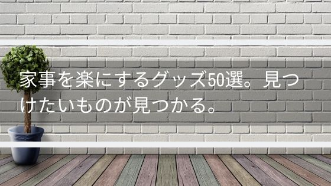

家事を楽にするグッズ50選！見つけたいものが見つかる【2019年】
色々な家事を楽にするグッズが出ています。
「楽」をテーマにしているこのブログならではの基準で家事を楽に、生活を便利にするグッズを紹介いたします。
家事の負担が軽減するもの時短できるものはもちろん、こんな便利なグッズがあるんだ、など定番のものから掘り出し物まで色々見つけてあります。
日常生活も掃除も洗濯も料理も収納も全部時短して便利にしていきたいですよね。
眺めているだけでもワクワクできるようにまとめたので良ければ見ていってください。
ほしいものが見つかえるよう手助けできれば幸いです。
生活の時短＆便利グッズ
日常生活で便利に役立つ日用品はこれです！
雑貨品はこれ！
乾電池式卓上そうじ機
手のひらサイズの掃除機。卓上の消しゴムカスを掃除するための道具です。
掃除機内にたまったごみ処理の手間が少ないのが特徴です。
子供が喜ぶので自主的に掃除してもらうのにはうってつけです。
デザインが可愛いのがいいですよね。
人感センサーライト
人の気配に反応して灯りを照らすライト。
玄関の電気をつける手間をなくしてくれます。
電池で動き、持ち運びが可能で好きなところに置いたり持って行ったりできるのが魅力的ですね。
そのため玄関以外でももちろん使えますよ。
コードレスな点が人気なのですが、犬や猫などのペットを飼っているご家庭では頻繁にライトをつけてしまい、電池が速く切れてしまうので注意してください。
ガス抜きプッチン
スプレー缶のガス抜き道具。
ガス缶のガスを抜くならおすすめです。
力が全然いらないので楽にガスが抜けてありがたいです。
使いかたは缶の底にガス抜きプッチンの金具を引っ掛けて倒すだけです。
金具は安全装置が付いているので安心してしまえます。
サーモスの真空断熱タンブラー
便利グッズとしては定番中の定番ですが、一応紹介しておきます。
長時間たっても中に入れた飲み物の温度が変わらないタンブラーです。
冷たい飲み物の場合、コップに水滴が付きません。
氷が長時間たっても全く溶けず、常に冷たい飲み物が飲めます。
温かい飲み物の場合、コップを触っても熱くないです。
時間がたっても熱々のコーヒーやスープが飲めるため冬にぴったりです。
実際に使ったレビューもあるのでこちらも参考にしてみてください。

グランズレメディ
足の消臭グッズはこれ以外考えられないです。
足の匂いに悩まされている方は一度試してみてほしいです。
このグランズレメディは白い粉で出来ており、靴に振りかけて使います。
靴を脱いだ後か履く前にまんべんなく粉をつけておくだけです。
これを5日～1週間続ければ全く匂わなくなります。
実際に使ったレビューもあるのでこちらも参考にしてみてください。

着る毛布
暖房を使わずに暖まれて、移動も可能なのが魅力です。
暖房をつけるほどでもない肌寒い日や、暖房をつけたけど部屋があったまるまで寒いといった時に重宝します。
毛布と名前についているくらいなので寝るときに使っても暖かくて便利ですね。
ただ、毛布と違って洗濯機で簡単に洗えるので手入れが楽でおすすめです。
紹介している物とは別の着る毛布にはなりますが、着る毛布のレビューもあります。

ヒートシーラー
袋菓子を再度密閉して保存できる便利グッズ。
ヒートシーラーにはさんでスライドさせるだけで保存できます。
輪ゴムやクリップだと湿気てしまいますが、これなら安心して残せますね。
お菓子の袋を密閉させる使い方以外にも袋に入れた小物を梱包するのにも使えます。
手作りの何かを販売やプレゼントするときなどに使ってみてはいかがでしょうか。
電気ケトル
こちらも便利グッズ、時短グッズとしては定番のものですが、ご紹介します。
水を入れてスイッチを入れるとほんの数分で水が沸騰しお湯になるというものです。
コーヒーを飲みたい、カップラーメンを作りたい、カップスープが飲みたいと思ったらすぐに作れるのがいいですね。
他にも掃除でお湯を使いたい場合に、手間がかからず作れるところもいいですね。
電気ケトルは種類が色々出ていますが、私が使っているのはティファール製です。
バス用品はこれ！
珪藻土マット
ここ数年(2017年から2019年)くらいで急に話題になった珪藻土マット。
風呂上がりに水分を吸収してくれるバスマットです。
買って開けた時の感想が「何だこの板！？」だったのは今でも覚えています。
珪藻と呼ばれるプランクトンの化石が自立呼吸することによって、すごい乾燥力を発揮してくれます。
水分を凄い勢いで吸収してくれるにもかかわらず、一瞬でマットが乾くのですごいですよ。
微妙にサイズが小さいので水滴が漏れるのが少しだけ気になりました。
ちなみに読み方は「けいそうど」です。
実際に使ったレビューもあるのでこちらも参考にしてみてください。

マイクロファイバーバスタオル
吸水力が自慢のバスタオルです。
掃除用品でもマイクロファイバーが使われているものがありますが、吸水性能が高く乾かす行為を時短できるのが魅力です。
体にポンポンと押し当てるとみるみるうちに水が吸われていきます。
肌触りがふわふわなのも特徴です。
体に直接使うものなのでありがたいですよね。
優しく包み込まれるような感覚で、子供や赤ちゃんにもよさそうです。
実際に使ったレビューもあるのでこちらも参考にしてみてください。

ちょっと贅沢で生活を潤わせる
ミルクカップフォーマー
ミルクを温めたり、ミルクで泡を作るためのアイテムです。
いつものコーヒーをラテにしたい、ラテアートを作りたいといった時に使えます。
ホットミルクが飲みたいときには温めるモードで作れます。
牛乳を入れて1分後には泡が完成。あとは注ぐだけで本格ラテになります。
手入れも電化製品なのに丸洗いできるので楽々です。
ツイスパソーダ SODAAK
飲み物をソーダにできる便利グッズ。
オレンジジュースや紅茶、ワインなどあらゆる飲み物を炭酸にしてくれます。
フレッシュでさわやかな気分になりたいときには是非どうぞ。
市販の炭酸飲料に比べてちょっと炭酸感が少なめなので刺激が欲しい人向けではないことだけ注意してください。
スパークリング〇〇を簡単に作れるので、色々な飲み物で試してみてください。
掃除の時短＆便利グッズ
掃除グッズ
超音波洗浄機
水だけで眼鏡やアクセサリーを洗浄する便利グッズ。
手アカや黒ずみを落としツヤが出てくるので汚くなったお気に入りのアクセサリーや、いつも拭いているだけの眼鏡などに使ってみてください。
他にも隙間の汚れがとれるのがいいところですね。
メッキしてあるものには使えないので注意です。
オキシクリーン
こびり付いた焦げ、衣服のシミ、風呂の水アカなど色々な汚れをきれいにする漂白剤です。
個人的には洗剤は汚れに合わせて変えるべきだと考えています。

しかし、こういった洗剤を変えるのは面倒な人にとっては万能なオキシクリーンはおすすめです。
またオキシクリーンと用途に合わせた洗剤を両方使って、頑固な汚れを落とすというのもありかもしれません。
オキシクリーンは粉です。
汚れの酷いところに歯ブラシなどで刷り込むと、汚れが取れやすくなりますよ。
ソルベント(溶解液)
シールをはがすならこれ！
シールの隙間にこの溶解液を流し込むことでスルっとシールがはがせるので気持ちがいいです。
テープの後や子供のいたずらで張られたシールなどをきれいにはがせるので便利です。
このソルベントでシールを剥がすと剥がしたシールをまた使えるという特徴もあります。
掃除のために使ってもいいですし、シールの再利用に使ってもいいですね。
ティッシュボックス ルテラ
ティッシュボックス？いいえ、ただのティッシュボックスではありません。
丸いところをプッシュするとアルコールが出てきてウエットティッシュを作れます。
普段はティッシュで使いたいけど、ウエットティッシュで使いたいときもある。
そんな時に便利なアイテムです。
アルコール消毒液をカートリッジにセットしておくだけで使えるので手軽に使える点もよいですね。
激落ちクロス マイクロファイバー
吸水性が高いタオル。
食器の水拭き、掃除の後の空拭き、窓の水滴拭き、こぼした飲み物を拭くなど水を吸収する性質を利用するのがおすすめです。
洗車した車の水拭きにも使えます。
水拭き以外にも油汚れや埃取りにも使えて、正直なところ掃除には必須級のグッズだと思っています。
機能とはあまり関係ないですが、色が別々なので用途によって使い分けられる点を評価している方もいます。
ほこり取りフィルター
換気扇、空気清浄機などのフィルターの埃取りを時短できる便利グッズです。
埃を吸い込むフィルター部分に張り付けておいて、取り外しサインが見えたら取り外すだけの簡単なフィルターです。
使ってみるとわかりますが、取り外ししたときに埃がびっしりとついていて効果が実感できます。
料理の時短＆便利グッズ
調理グッズ
シリコン調理スプーン
炒める、混ぜる、よそい分けるの3つの役割が1つで出来る調理器具です。
シリコン調理スプーンのいいところ、お話します。
シリコン素材なので炒めても混ぜても鍋に傷はつきません。
柔らかい素材の食材も扱いやすいです。
また、混ぜるのと取り分けるのが一緒にできるのは調理器具を持ち帰る必要がなく便利です。
無印良品のシリコン調理スプーンが一時期話題になりましたが、使い勝手が良いのはこちらの山崎実業のものとなります。
理由は軽いこと。次に裏に突起が付いており置くことができること。この2点です。
使ってみて初めて良さが実感できました。
ラップペン
その名の通りラップに文字を書くことができるペンです。
残り物のメモに、お弁当のおにぎりにデコレーションしたり、作り置きの夕食にメッセージを書いたりできます。
お子さんのお弁当をきれいにデコレーションすると喜ばれますよ。
書き心地も悪くなくすらすらと書けます。
今回ご紹介しているのは3色のものですが6色のものも売っています。
TOOLS グリラー
グリル用の調理器具。
オーブン、直火、電子レンジ、魚用グリルの４つ調理に使うことができます。
フルーツに砂糖とシナモンをかけてオーブンで焼けばフルーツグラタンが。
貝やエビ、ハーブを詰め込んでレンジで蒸してふっくらいい香り。
肉とジャガイモを直火で熱々ジューシーに。
鯛とレモンを魚グリルでおしゃれなごちそうに。
蓋をして調理すればグリル内は汚れません。
色は黒やベージュを選べますが汚れが目立たないように黒にするのがおすすめです。
シリコン鍋敷き
シリコン製の鍋敷きですが、鍋を敷く以外の使い道が便利です。
面倒くさがり屋の人や一人暮らしの人におすすめです。
レンジで温めたものや、フライパンで調理したものをお皿に移さず食べるときに敷く使い方ができます。
シリコン製のためぐにゃぐにゃ曲がるのですが、鍋つかみの代わりになります。
持ち運び用の鍋つかみの代わりになり、そのまま敷いて料理を食べることができます。
瞬間解凍皿クイックプレート
冷凍食品を素早く解凍するためのプレートです。
使い方は簡単で、解凍したい食品を載せるだけ。
これだけで自然解凍の1.7倍ほどのスピードで解凍できます。
暖めて解凍する方法だとうまみの成分を逃がしてしまうことがありますが、このプレートは自然解凍の延長なので安心ですね。
キャベツピーラー
キャベツの千切り、玉ねぎの薄切りが簡単に作れるピーラー。
お店で食べる食感が家でも簡単に作れます。
飛び散らないようにうまく作るには慣れてコツをつかむ必要があるので注意が必要です。
使い勝手ですが、しゃっしゃっとキャベツにいい感じにひっかかりサクサク作れるのが良いですね。
出来上がったキャベツはふんわりとして食感がGoodです。
白髪ねぎカッター
白髪ねぎがサクッと作れるねぎカッター。
使い方も簡単でただ単にねぎの上をスーッと滑らせるだけ。
包丁で作ると手間も技術も時間も必要ですが白髪ねぎカッターなら楽に時短できて便利です。
安全キャップが付いているので刃がむき出しにならず収納しても安心です。
関孫六 ダイヤモンド＆セラミックシャープナー
力を入れずに、砥石のように包丁を研ぐ便利な研ぎ器。
コツも全く必要なく。順番通りにスライドするだけで切れ味が回復します。
砥石だとどこまで研げばいいのか悩んだり、そもそも研ぎ方が間違っていたりなど難しいです。
砥石に比べて大きさもコンパクトなため置き場所にも困らないです。
固めるテンプル
揚げ物後の油に入れて放置するだけで、油を固めることができる便利グッズ。
固まった油はフライ返しでつるっと取れて気持ちがいいです。
そして、そのまま燃えるゴミとして捨てることができます。
牛乳パックと新聞で処理している方もいらっしゃいますが、べたべたになったり、手間がかかったり大変ですよね。
この固めるテンプルなら楽に放置してるだけで油処理ができます。
注意点は油の熱いうちにいれることです。冷めてから入れても効果はないです。
家庭用真空パック気 真空パックん
食材を真空パックで密閉し長持ちさせる便利グッズ。
肉や野菜はもちろん、干物や燻製などの保存にも使えます。
特に燻製はこの真空パックで保存しておけば、燻製特有の匂いが冷蔵庫内に逃げません。
シールしてお菓子の保存にも使えます。
この真空パックんは他の会社のものより空気を抜くのが速く密封率が高いのでお勧めできます。
電動マルチミル
塩コショウを片手で引けるペッパーミル。
手動だとどうしても時間がかかってしまい、両手も使うので効率が悪いです。
さっと塩コショウを引いて楽に時短したい人向けのペッパーミルです。
料理する人はわかると思いますが、片手はべとべとで片手だけ空いている状況ってよくありますよね。
そういった状況でも使えるのが利点です。
ミルで悩んでる方には是非使ってほしい便利グッズです。
買った人の評価は皆高いです。
また、ほかのメーカーのものは値段が高いものが多いですが、この電動マルチミルに性能が劣るものばかりです。
センターエッグトリプルパン
仕切りが付いているフライパンです。
同時に３つの料理を火にかけることができます。
名前の通り真ん中は卵焼きが焼ける形になっています。
朝食づくりやお弁当作りにおすすめです。
電子レンジで時短
面倒くさがりな人や料理の負担を軽減したい人は、電子レンジで料理してみてはいかがでしょうか。
チンしてそのまま本格パスタ
電子レンジでパスタをゆでられます。
湯切りの方法が傾けるタイプではなく、ざるのように切るタイプなのが特徴で楽です。
お湯を切ったらそのまま皿としても使えそこにパスタソースをかけるだけですぐ食べられるので、面倒くさがりな人にもおすすめです。
拭きこぼれる心配がないのも評価ができるポイントですね。
電子レンジで作るラーメン
電子レンジで即席ラーメンが作れます。
そのままどんぶりとしても使えるので洗い物が一つ減りますね。
一緒に野菜を入れて使うことも出来るので栄養管理したい方にも嬉しいですね。
茹でる作業に比べて電子レンジなら楽できます。
小腹がすいたときについつい作ってしまいそうなので食べすぎには注意してください。
レンジ&炊飯鍋二重蓋 2号
電子レンジでご飯が炊けます。
レンジで作ったのにしっかり粒が立つ点が良いです。
むらもなく、甘みも出てくるので美味しく炊けます。
また、直火で使用することもできるので小さな土鍋としても使えます。
使い方はレンジで加熱して、そのあと蒸します。
時間は25分いかない程度で出来るので時短もできますね。
茹で蒸し工房
電子レンジで野菜を蒸すための便利グッズです。
ブロッコリー、ジャガイモ、ニンジン、トウモロコシなどをこの茹で蒸し工房にいれてレンチンするとふっくら蒸せます。
野菜の下ごしらえが負担ならぜひ使ってみてください。
もちろん丁度良い硬さに蒸すこともできるのでそのまま食べても美味しいです。
電子レンジでポップコーン
電子レンジで2分半あっためるだけで、熱々のポップコーンができます。
凄い手軽に大量のポップコーンが作れるのはワクワクしますよね。
子供と一緒に作れば子供はとても喜ぶと思います。
飲み物を用意して映画を流せば気分は映画館ですね。
レンジで焼き魚ボックス
電子レンジで焼き魚が焼けます。
調理できる魚は決まっていますが、電子レンジで焼き魚が作れるのは面白いですよね。
調理できる魚は「サケ、サバ、ブリ、サワラ、西京漬け(サケ・サバ・サワラ・銀ダラ)、みりん干し(アジ・イワシ・サバ)、アジの開き」となります。
サンマが焼けないのはちょっと残念ですが、魚を焼くのは面倒だけど焼き魚が食べたいって場合に重宝します。
ボックス型なので油が飛び散らず、電子レンジを汚さないので良いですね。
家事の負担を軽減したい、焼き魚の作り方わからないけど家で焼き魚が食べたいなどの願いをかなえてくれます。
1個で2回まで使え、使用後は折りたたんで捨てるだけなのでグリル掃除に比べて遥かに手間がかかりません。
いい点も悪い点もありますが、良ければ使ってみてください。
レンジで簡単 どんぶり・ハムエッグ
電子レンジでハムエッグやどんぶりの具材を作ることができます。
油を使わずに、ベーコンやハム＋卵をレンチンするだけで簡単にハムエッグが作れるので、朝食づくりを時短できます。
卵丼のレシピもついており、レシピ通りに作ると簡単にとろとろ食感の卵丼も作れます。
このレシピをアレンジして色々丼を作られている方もおり、丼づくりにもおすすめです。
レンジでゆでたまご
電子レンジで簡単にゆでたまごが作れます。
黄身がきれいに真ん中で固まるのが特徴で鍋で作るよりも手間が軽減され、きれいに仕上がります。
またチンする時間を調整することで、半熟卵など好みの硬さのゆで卵を作ることができます。
容器の見た目もなんかかわいくてテンション上がりますね。
洗濯の時短＆便利グッズ
洗濯グッズ
シューズ洗濯ネット
靴を洗濯機で洗濯できる便利グッズ。
子供の上履きやサンダル、スリッパ、運動靴を洗濯するのに使っている人が多い洗濯ネットです。
たかが洗濯ネットだとあなどっていたのですが、ちゃんと黒ずみが取れ、大変だった靴の洗濯が楽になりました。
ゴシゴシこするのは本当に負担だったので、もっと早く見つけていればと思いました。
ただ、評判を見ているとちらほらファスナーが壊れやすいとのレビューを見たのでそこは注意してください。
革専用洗濯洗剤 革るん！
革製品が自宅で洗濯できる洗剤。
革製品であれば本革にも合革にも使える洗剤です。
使い方はきれいにしたい服や鞄を洗濯ネットにいれ、この洗剤をいれて洗濯機を回すだけです。
正直革製品を洗うのは怖かったですが、黒ずみや皮脂汚れ、カビなどがきれいになったので使ってよかったです。
革靴にも使えます。靴はスポンジに洗剤をつけて優しく手で拭いてあげるときれいにできます。
あくまでも優しくで強くこするのは危ないです。
注意点はいっぱいあるので説明書はしっかり読んだほうがいいです。
また、洗えるもの、洗えないものの注意もよく読んでから使ってください。
Rosefray ピンチハンガー
ステンレス製のピンチハンガー。
プラスチック製に比べて何がいいのか気になりますよね。
一番の利点は壊れにくい点です。
１０年使って壊れていない方もいらっしゃいます。
プラスチック製のピンチハンガーだとボロボロでザラザラになった経験ありますよね。
そういったのがステンレスだとないのがいいところです。
また、挟む力が強く洗濯ものが落ちる心配もないです。
プラスチックのものより重い洗濯ものが干せるのも良い点ですね。
ズボラーネット
洗濯の負担を軽減してくれるのはこのズボラーネット。
これは洗濯ネットと洗濯かごとランドリーバックの３つの機能が１つになった便利グッズです。
洗濯ものをこのネットに入れて洗濯し、そのまま洗濯かごとしてベランダなどの干す場所まで運べます。
洗濯機から取り出してかごに入れる動作を楽に時短できるわけですね。
また、旅行先に持っていけば、ランドリーバックとして洗濯ものを運び、そのままコインランドリーの洗濯機に放り込み、再びそのまま持って帰ることができます。
実際に使ったレビューもあるのでこちらも参考にしてみてください。

ジェルボール
第三の洗濯洗剤といわれ、粉洗剤、液体洗剤と並ぶ洗濯洗剤です。
使い勝手に特化しており、軽量いらずですすぎが１回で済むのが特徴です。
家事の負担は少しでも軽減したい、そんな風に考えているのであればこのジェルボールはぴったりです。
洗濯機に１つ放り込むだけの手軽さで少しでも時短してみてほしいです。
汚れも特に問題なく取れるためおすすめです。
実際に使ったレビューもあるのでこちらも参考にしてみてください。

収納の時短＆便利グッズ
収納グッズ
スツール クッション付収納ボックス
椅子の中に収納できるスツール。
椅子と収納スペースが一体化しているため場所を節約できるのが良いです。
ごちゃごちゃした部屋をすっきりさせて収納上手になってください。
椅子として使うのはもちろん普段は収納にだけ使って、電球の交換など高さが必要になった時だけ台として使うのもありです。
吊るせる圧縮袋
その名の通り衣服を圧縮したまま吊るせる圧縮袋。
冬のコートや防寒着ってかさばりますよね。
そんな季節ものの衣服を圧縮させることでクローゼットの中をすっきりさせます。
スペースの圧迫を約２０％に抑えると聞くとかなりの効果がありますよね。
また収納面以外にも防虫、湿気対策、カビ予防にも使えておすすめです。
下駄箱下シューズワゴン
下駄箱下のスペースをすっきりさせるための収納便利グッズです。
キャスターが付いており出し入れ楽々でごちゃごちゃしやすい下駄箱下を有効活用します。
入れておくのは掃除用具や園芸用具、おもちゃなどなんでもありで、片付ける場所に困っているものを入れていけばよいですね。
板が手前についていて目隠しにもなるので、片付けが苦手でとにかくほうりこんでおく人でも目を気にせず使えます。
つっぱり式ポールハンガー I tre
床と天井につっぱり、枝分かれしたフックに帽子やバッグなどをかけるハンガーツリーです。
フックが多くついているのでかけられるものが多いのがおすすめのポイントです。
全体耐荷重は20kgもあり、どんどんかけていっても問題ないのも嬉しいです。
自動ゴミ箱ZitA
人生で29万回ゴミ箱の開け閉めが行われるといわれていますが、それを0にしてくれるのがこのごみ箱です。
蓋の開け閉めがセンサー式で自動に行われます。
１回１回の効果は少ないですが29万回と聞くと人生の無駄な時間を相当時短できます。
相応のお値段はしますが、評判がよくAmazon、楽天、ヤフーすべてでカテゴリ１位を取るほどなので効果は間違いなしです。
Amazonなどでも買えますが、公式サイトはこちらになります。
ひらけ、ゴミ箱!!自動ゴミ箱のZitA
まとめ
まとめるの大変でしたが、それだけおすすめしたい時短＆便利グッズがあったということです。
求めていたものは見つかりましたか？
少しでもお役に立てたのならば幸いです。
是非、便利グッズを使って家事の負担を軽減してみてください。
今後もよい便利グッズを見かけたら追加していきますのでご期待ください。
(最終更新日：2019年11月19日)